Diagrams#
Create an SVG diagram in Python, then embed it in a report as a numbered figure.
A Diagram provides a canvas for components placed at explicit coordinates. Component functions supply the shapes and
colors. The library does not measure text, arrange graphs, or prevent nodes from overlapping. The same code always
produces the same bytes. Built-in components and Lucide icons contain no scripts or remote assets. The library
XML-escapes text and attribute values, including values in custom elements.
The default component heights, insets, and text sizes follow a golden-ratio scale. The examples use the same scale, but you can pass other values. See The scale for details.
The first code block creates a complete one-node diagram. Later blocks show only the code added for that section and omit repeated imports, canvas setup, and elements introduced earlier. Their adjacent images can include those earlier elements.
Draw one node#
Create a canvas with a title and size, then add a node. The node’s role describes its place in the flow and selects
its default stroke and fill keys: ROOT marks input, PARENT marks processing, and LEAF marks output. The node’s
coordinates determine its position on the canvas.
from mdreport import Diagram, DiagramTheme, MarkdownReport, NodeRole, title_node
diagram = Diagram("Source", width=466, height=89, theme=DiagramTheme.LIGHT)
title_node(diagram, 89, 17, 288, "Source", role=NodeRole.ROOT)
The positional arguments are x, y, width, and the label. A title_node is always 55 units tall. Use this height
to position the next component below it. Components with content-dependent heights return their calculated height.
This canvas measures 466 by 89 units, and the node measures 288 by 55 units. Each outer dimension is about φ times its inner dimension, so the node occupies the golden section of the canvas.
Embed the diagram#
Call figure to embed the diagram in a report. The alternative text defaults to the diagram title.
report = MarkdownReport().title("Source")
report.append(diagram.figure(caption="Source node"))
Join two nodes#
Use line to draw a straight connector. Pass arrow=True to add an arrowhead at the end. Leave a small gap between the
connector and the node so the arrowhead does not touch the border.
title_node(diagram, 89, 44.5, 288, "Source", role=NodeRole.ROOT)
title_node(diagram, 610, 44.5, 288, "Store", role=NodeRole.LEAF)
diagram.line(398, 72, 589, 72, arrow=True)
The 55-unit nodes are centered on a 144-unit canvas. Their centerline is 72, which puts their y coordinate at 44.5.
SVG accepts the resulting half-unit coordinate. For connectors that turn a corner, pass a list of points to path.
Both line and path accept dashed=True for conditional routes.
Fit the node to the copy#
Choose a node shape based on how much text it contains. title_node displays a name. centered_node adds one short
line below the name. information_node left-aligns a category, title, and one or more description lines. Text does not
wrap, so each line must fit within the node width.
title_node(diagram, 34, 78.5, 288, "Source", role=NodeRole.ROOT)
centered_node(
diagram, 466, 61.5, 288, "Transform", "Normalize the input", role=NodeRole.PARENT
)
information_node(
diagram,
898,
34,
288,
"Output artifact",
"Checked record",
["Ready when checks pass"],
role=NodeRole.LEAF,
)
diagram.line(343, 106, 445, 106, arrow=True)
diagram.line(775, 106, 877, 106, arrow=True)
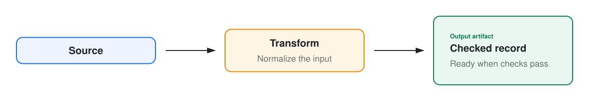
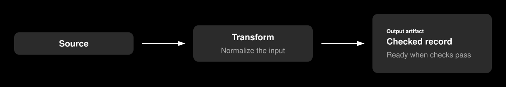
The three nodes are 55, 89, and 144 units tall. These are consecutive steps on the scale, and each is about φ times
the preceding height. Adjusting each y coordinate by half the difference in height centers all three nodes at 106.
Add a legend#
legend_header draws a rule across the specified width and returns the centerline for its keys. Use color_key to
identify a role and arrow_key to identify a connector style.
diagram.path([(1042, 178), (1042, 212), (610, 212), (610, 158)], dashed=True, arrow=True)
diagram.text(826, 199, "If invalid: retry", size=15, color="muted", weight=500)
key_y = legend_header(diagram, 34, 246, 1152)
is_colored = diagram.theme != DiagramTheme.DARK
if is_colored:
color_key(diagram, 34, key_y, "Collected input", NodeRole.ROOT)
color_key(diagram, 267, key_y, "Processing", NodeRole.PARENT)
color_key(diagram, 500, key_y, "Published output", NodeRole.LEAF)
arrow_key(diagram, 733 if is_colored else 34, key_y, "Normal flow")
arrow_key(diagram, 967 if is_colored else 267, key_y, "Conditional flow", dashed=True)
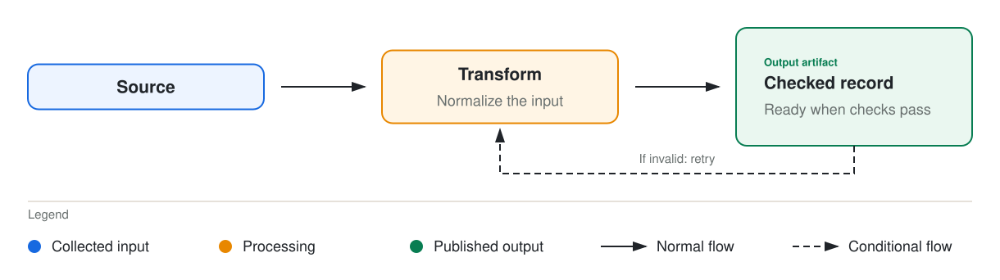
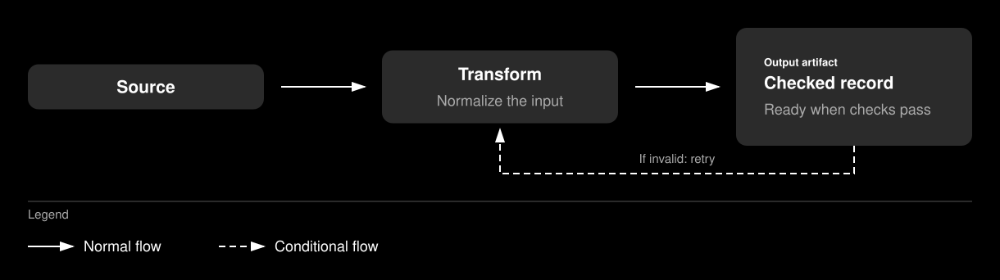
The dark theme draws all nodes in the same gray, so color keys cannot distinguish their roles. Connector styles remain distinct in both themes. The example omits the dark theme’s color keys and moves its arrow keys left.
Group the flow#
Use group_panel to frame related nodes with a heading and muted caption. Reserve 55 units above the child nodes for
the heading and 34 units below them for the caption.
diagram.text(610, 55, "Ingest pipeline", size=29, weight=550)
caption = "Peers with the same role use the same node pattern."
group_panel(diagram, 34, 89, 1152, 233, "Main flow", caption)
title_node(diagram, 89, 188.5, 288, "Source", role=NodeRole.ROOT)
centered_node(
diagram, 466, 171.5, 288, "Transform", "Normalize the input", role=NodeRole.PARENT
)
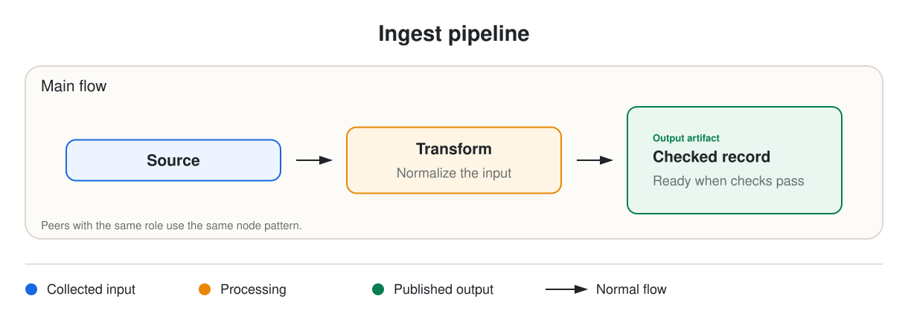
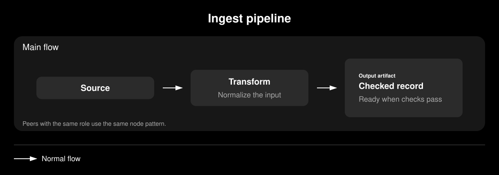
The panel is 233 units tall: 55 for the heading, 144 for the nodes, and 34 for the caption. Use diagram.text for a
heading or other standalone label. Its y coordinate sets the first line’s baseline. For multiple lines, pass a list
of strings. Pass title=None to legend_header to draw a rule without a heading.
Branch on a condition#
Use decision_node for a short question, and place each answer on its outgoing connector. node_port returns an
attachment point on one side of a box, so you do not have to calculate the edge coordinate.
title_node(diagram, 34, 116.5, 233, "Record", role=NodeRole.ROOT)
decision_node(diagram, 377, 99.5, 233, 89, "Schema ok?")
diagram.line(*node_port(34, 116.5, 233, 55, PortSide.RIGHT), 356, 144, arrow=True)
box_label(diagram, 733, 89, 178, 55, "Accept", fill="leaf_fill", stroke="leaf", size=18)
box_label(diagram, 733, 178, 178, 55, "Quarantine", size=18)
accepted = node_port(377, 99.5, 233, 89, PortSide.RIGHT)
diagram.path([accepted, (667, 144), (667, 116.5), (712, 116.5)], arrow=True)
diagram.text(679, 108, "Yes", size=15, color="muted", weight=500, anchor=TextAnchor.START)
rejected = node_port(377, 99.5, 233, 89, PortSide.BOTTOM)
diagram.path(
[rejected, (493.5, 233), (667, 233), (667, 205.5), (712, 205.5)],
arrow=True,
dashed=True,
)
diagram.text(510, 225, "No", size=15, color="muted", weight=500, anchor=TextAnchor.START)
labeled_connector(diagram, (932, 116.5), (987, 116.5), "records")
box_label(diagram, 1008, 89, 178, 55, "Store", fill="leaf_fill", stroke="leaf", size=18)
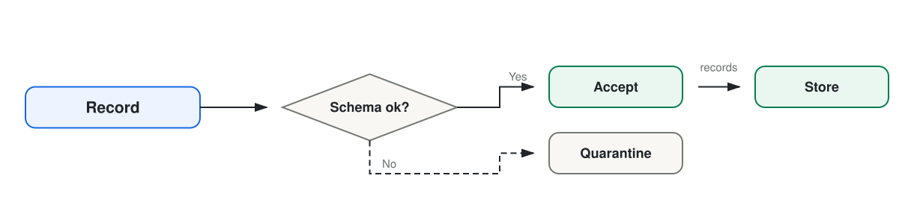
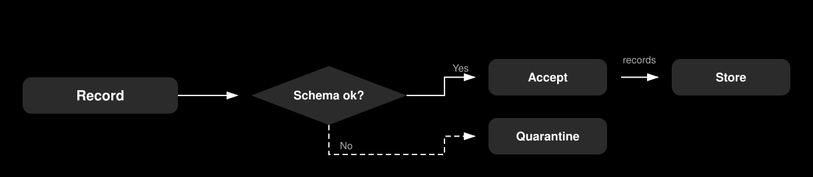
box_label draws the rounded box used by most named components. Pass a role’s fill and stroke to match a node, or
use the defaults for a neutral box. labeled_connector places a muted caption above a horizontal arrow. It raises an
error if the connector is not horizontal.
Show a record and annotate it#
list_node displays fields below a divider. repeated_stack draws three offset copies of a box to represent multiple
items. junction marks an intentional split and distinguishes it from crossing lines. annotation_callout places a
note on a leader line without an arrowhead.
list_node(diagram, 34, 34, 233, "Record", ["id: string", "status: enum", "score: float"])
diagram.line(288, 99.5, 356, 99.5, arrow=True)
repeated_stack(diagram, 377, 55, 233, "Documents", "24 per batch")
diagram.line(644, 99.5, 678, 99.5)
junction(diagram, 686, 99.5)
diagram.line(686, 99.5, 788, 99.5, arrow=True)
box_label(diagram, 809, 72, 233, 55, "Publish", fill="leaf_fill", stroke="leaf", size=18)
diagram.path([(686, 99.5), (686, 199), (788, 199)], arrow=True)
box_label(diagram, 809, 171.5, 233, 55, "Cache", size=18)
annotation_callout(diagram, 1097, 191, ["Expires after", "15 minutes"], (1042, 199))
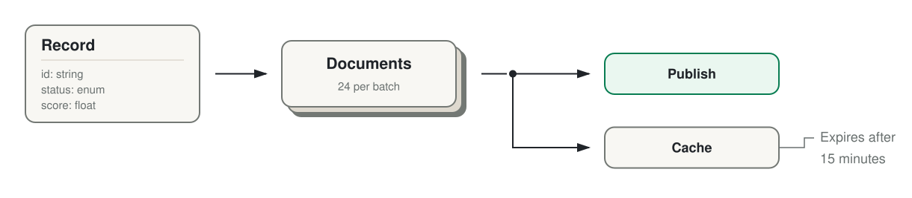
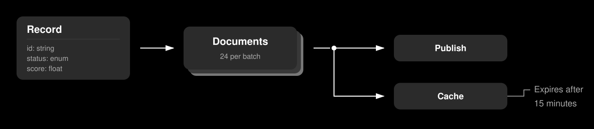
list_node returns its height: 68 units plus 21 units per row. This includes a 55-unit header, 21 units for each field,
and a 13-unit footer. Use the returned height to position the next component.
Divide work into lanes#
A swimlane creates a labeled work area for an actor, stage, or system. A boundary_frame marks an ownership or
containment boundary. The boundary keeps its outline even when the active theme omits other borders.
boundary_frame(diagram, 34, 34, 1152, 288, "Private network")
swimlane(diagram, 55, 89, 1110, 89, "Extract")
swimlane(diagram, 55, 199, 1110, 89, "Publish")
extract = ((233, 178, "Parse"), (500, 178, "Normalize"), (767, 178, "Score"))
for x, width, label in extract:
box_label(diagram, x, 106, width, 55, label, fill="parent_fill", stroke="parent", size=18)
labeled_connector(diagram, (432, 133.5), (479, 133.5), "records")
diagram.line(699, 133.5, 746, 133.5, arrow=True)
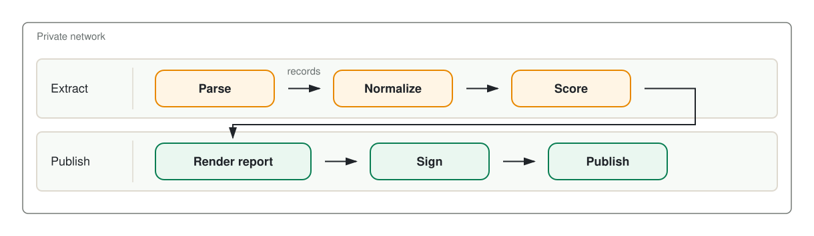
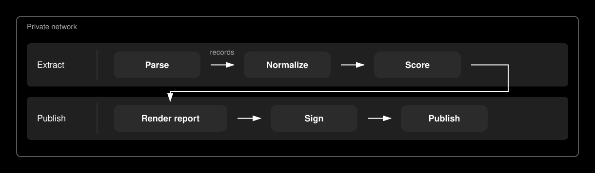
A swimlane reserves its first 144 units for the header. Place its boxes after that column.
Name a node with an icon#
icon_node places a Lucide icon to the right of a left-aligned title and description. The icon is decorative and does
not replace the title.
sources = (
(34, 34, "Warehouse tables", "Nightly extract", LucideIcon.DATABASE, NodeRole.ROOT),
(682, 34, "Spreadsheets", "Uploaded by analysts", LucideIcon.TABLE_2, NodeRole.ROOT),
(34, 178, "Runbooks", "Narrative context", LucideIcon.NOTEBOOK_TEXT, NodeRole.PARENT),
(682, 178, "Checked record", "Checks passed", LucideIcon.FILE_CHECK_2, NodeRole.LEAF),
)
for x, y, title, description, icon, role in sources:
icon_node(diagram, x, y, 504, title, description, icon=icon, role=role)
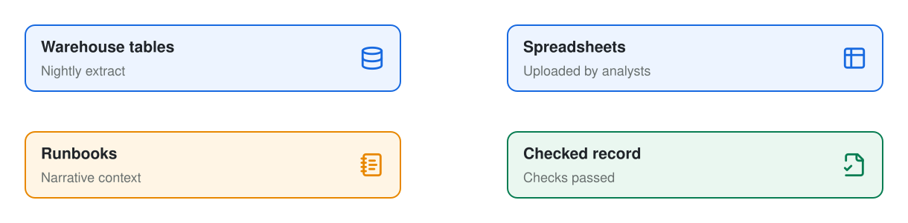
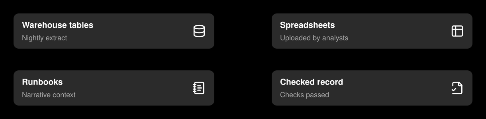
LucideIcon defines several common icons. You can also pass any icon name from the pinned Lucide release as a string.
The first use downloads the icon geometry and upstream license from the pinned package, then caches both on disk. Later
runs use the cache without a network connection. The library converts the geometry to plain SVG shapes and excludes
scripts and external references. Each icon is 34 units square with a 21-unit gutter on each side, so an icon node must
be at least 144 units wide.
To draw an icon outside a node, append the result of lucide_icon_element. An accent color requires the zero-based
geometry indices in accent_parts. A two-stop gradient requires an element_id that is unique in the document. You
cannot combine an accent with a gradient. Lucide color arguments must be hexadecimal values.
lucide_icon_element("database", accent="#087d52", accent_parts=(0,))
lucide_icon_element(
"database", gradient=("#1769e0", "#087d52"), element_id="database-gradient"
)
Choose a theme#
The light theme uses bordered, tinted surfaces on a transparent canvas. The dark theme uses borderless gray surfaces and white text on a black canvas. Component positions remain the same in both themes.
Diagram("Ingest", theme=DiagramTheme.DARK) # gray surfaces on a black canvas
Diagram("Ingest", background="#ffffff") # a solid canvas, not a transparent one
Diagram("Ingest", background=("#fdf6ec", "#eef7f1")) # a gradient wash across the canvas
Diagram("Ingest", theme=DiagramTheme.DARK, borders=True) # dark, with the role strokes drawn
The background, borders, and palette arguments override the corresponding theme settings. The dark examples on
this page retain the black canvas, so each appears as a framed image.
Paint arguments on Diagram drawing methods and component functions accept a palette key such as "ink", "muted",
or "root_fill". The diagram resolves the key against the active theme. It treats an unknown string as a literal CSS
color.
Palette keys#
Both themes define the same fourteen keys. You can override any of them. The table shows the default values.
Key |
What it colors |
Light |
Dark |
|---|---|---|---|
|
Titles, body text, connectors, and arrowheads |
|
|
|
Descriptions, captions, field rows, and legend labels |
|
|
|
Neutral boxes, decision nodes, and boundary frame outlines |
|
|
|
Panel and lane outlines, legend rules, and dividers |
|
|
|
The canvas |
|
|
|
The |
|
|
|
The |
|
|
|
Neutral component surfaces |
|
|
|
The |
|
|
|
The |
|
|
|
The |
|
|
The background and role stroke keys depend on other settings. The light theme leaves the canvas transparent unless
you pass background="background". Role strokes appear only when borders is enabled. The light theme enables borders
by default, while the dark theme disables them. In the default dark palette, all roles have the same gray fill and white
stroke. Set borders=True to show those strokes, or override the role colors to distinguish the roles.
Import LIGHT_PALETTE, DARK_PALETTE, or theme_palette(theme) to read the existing theme mappings. Copy a mapping
before changing it because these objects hold the global theme state.
from mdreport import DiagramTheme, theme_palette
palette = dict(theme_palette(DiagramTheme.LIGHT))
palette["root"] = "#0e9f6e"
Brand the palette#
Pass only the changed keys to palette. All other keys retain the theme defaults.
BRAND_PALETTES = {
DiagramTheme.LIGHT: {
"root": "#0e9f6e", "root_fill": "#ecfdf5",
"leaf": "#7c3aed", "leaf_fill": "#f3e8ff",
},
DiagramTheme.DARK: {
"root": "#34d399", "root_fill": "#0c2b22",
"leaf": "#c4b5fd", "leaf_fill": "#231a39",
},
}
diagram = Diagram("Ingest", width=987, height=144, theme=theme, palette=BRAND_PALETTES[theme])
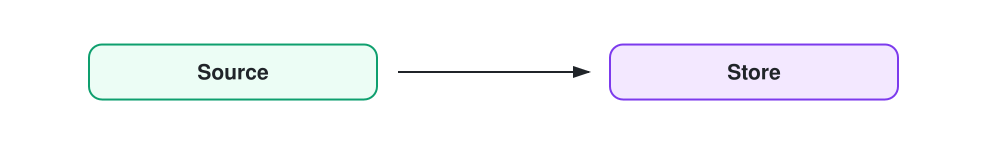
Define separate overrides for each theme. A tint that works behind dark text on a light canvas can obscure white text on a dark canvas.
Adjust border widths#
Set Diagram(stroke_width=...) to change the default width for rectangle-based components and the canvas frame. Pass
the same argument to a supported component to override one node. The default width is 2. Connectors use their own
width argument. decision_node uses a fixed width of 2, and boundary_frame uses a fixed width of 1.5.
Use gradients#
diagram.gradient defines a two-stop linear gradient and returns a paint value. Use that value anywhere the API accepts
a color, including a node’s fill and border. Each stop can be a palette key or literal color. The gradient axis uses
fractions of the element’s dimensions. By default, it runs from corner to corner; x2=1, y2=0 makes it horizontal.
The canvas can also use a gradient. Pass two colors to background to create a full-canvas gradient with the reserved
ID canvas. Other gradient names remain available.
stops = BOLD_GRADIENTS[theme]
diagram = Diagram(
"Ingest", width=1220, height=144, theme=theme,
stroke_width=3, borders=True, background=stops["canvas"],
)
warm = diagram.gradient("warm-fill", *stops["fill"])
bold = diagram.gradient("bold-edge", *stops["edge"], x2=1, y2=0)
title_node(diagram, 34, 44.5, 288, "Source", role=NodeRole.ROOT)
centered_node(
diagram,
466,
27.5,
288,
"Transform",
"Normalize the input",
role=NodeRole.PARENT,
fill=warm,
stroke=bold,
stroke_width=5,
)
title_node(diagram, 898, 44.5, 288, "Store", role=NodeRole.LEAF)
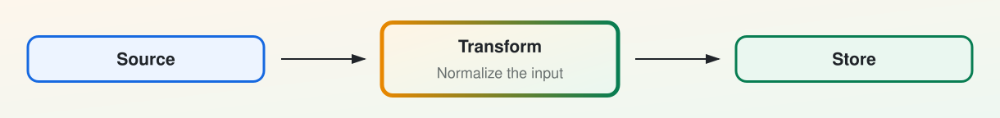
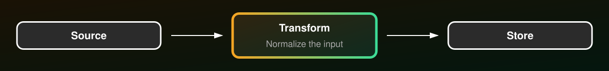
This example stores gradient stops by theme, as shown in Brand the palette. In the dark theme,
parent and leaf are both white, so a gradient between them would appear as solid white. Separate dark-theme stops
keep the border visible against the black canvas.
The fill and stroke arguments accept a palette key, literal CSS color, or gradient paint. Either argument overrides
the color supplied by the node’s role without changing its semantic role. A standard color_key uses the role’s
palette stroke, not a node’s custom paint. box_label, title_node, centered_node, information_node, and
icon_node accept fill, stroke, and stroke_width.
Gradient definitions have three constraints:
Each gradient name becomes an SVG ID and must be unique within the diagram. Defining the same name twice raises an error.
An
icon_nodeuses a flat Lucide stroke for its icon. A gradient border does not change the icon color. To apply a gradient to the icon, passicon_gradientwith a uniqueicon_id. Do not combineicon_gradientwithicon_accent; an accent requires one or moreaccent_partsindices.A borderless theme omits strokes on ordinary component surfaces, regardless of their width or paint. Frames and boundary frames remain visible. In the dark theme, set
borders=Trueto display a gradient node border. Gradient fills do not require borders.
To control a canvas gradient’s axis, refer to its ID when you create the diagram, then define the gradient. SVG resolves paint by ID rather than document order, so the definition can follow its first use.
diagram = Diagram("Ingest", background="url(#hero)")
diagram.gradient("hero", "#fdf6ec", "#eef7f1", x2=1, y2=0)
Frame the canvas#
Use diagram.frame to outline the canvas. It accepts palette keys, literal colors, and gradient paints. Pass radius
to round the corners.
diagram = Diagram("Ingest", width=466, height=144, background=("#fdf6ec", "#eef7f1"))
edge = diagram.gradient("edge", "parent", "leaf", x2=1, y2=0)
title_node(diagram, 89, 44.5, 288, "Source", role=NodeRole.ROOT)
diagram.frame(edge, width=6, radius=21)
The method places the outline half a stroke inside the viewBox. A rectangle drawn directly on the edge loses its outer
half to clipping and appears thinner than requested. The frame width defaults to the diagram’s stroke_width.
Frames and boundary frames remain visible under borderless themes. Call frame last if it must appear above content
that reaches the canvas edge.
Draw a shape the library does not have#
Use svg_element to create an SVG element and append to add it to the canvas. The function converts underscores in
attribute names to hyphens and omits attributes set to None. The serializer escapes all attribute values.
diagram.append(
svg_element(
"ellipse",
cx=493.5,
cy=72,
rx=89,
ry=55,
fill=diagram.color("parent_fill"),
stroke=diagram.color("parent"),
stroke_width=2,
)
)
diagram.text(493.5, 79, "Queue", size=21, weight=550)
diagram.color resolves a palette key for the active theme, which avoids hard-coded hex values in custom elements. The
ellipse has horizontal and vertical radii of 89 and 55 units, for a total size of 178 by 110 units. It uses the same
golden proportion as other dimensions in the default scale.
Save or serialize#
Use save to write a standalone SVG. to_string returns serialized SVG text, while data_url returns a base64-encoded
data URL.
diagram.save(Path("data/ingest-pipeline.svg"))
The generated SVG is indented and deterministic. Committed diagrams produce readable diffs only when their source changes.
The scale#
Default component sizes follow a single golden-ratio system.
FIBONACCI_SPACE contains these lengths: 3, 5, 8, 13, 21, 34, 55, 89, 144, 233, 377, and 610. Consecutive Fibonacci
numbers approach φ, giving adjacent steps golden proportions while keeping coordinates as whole numbers. The defaults
use 21-unit insets, 34-unit card insets and icons, and node heights of 55, 89, or 144 units. The wide examples use
288-unit nodes, 144-unit gaps, and 34-unit outer margins.
TYPE_SCALE contains these text sizes: 13, 15, 18, 21, 25, 29, and 34. Each size is about the preceding size multiplied
by the cube root of φ. Three steps produce a full golden-ratio increase, such as 13 to 21 to 34. The defaults use 18
for body text, 21 for node titles, and 29 for diagram headings.
Line spacing also follows φ. The next line begins about φ times its font size below the current baseline. In a text stack, the gap between rows is the upper row’s size divided by φ. Common sizes therefore align with the Fibonacci scale: 13-unit text advances by 21 units, 21-unit text by 34, and 34-unit text by 55. The gutter constants follow the same calculation: 13 divided by φ is about 8, and 21 divided by φ is about 13.
Three functions apply the scale to custom layouts. Each result is rounded to a whole unit.
from mdreport import golden_height, golden_point, golden_split
golden_height(1120) # 692 — the height that makes 1120 a golden rectangle
golden_split(1152) # (712, 440) — the two parts of a golden cut
golden_point(0, 610) # 377 — the off-center line to sit a focus on
Pass from_end=True to golden_point to mirror the cut and move the focus toward the start of the span. This position
works for a title band or heading.
Component sizes#
Use these fixed heights to position adjacent nodes. The heights follow the scale, so you can center mixed nodes by offsetting each one by half the difference in height.
Component |
Height |
|---|---|
|
55 |
|
89 |
|
89 |
|
144, plus 29 per description line after the first |
|
68, plus 21 per row |
|
89, plus a 13-unit offset behind it |
Container components use dimensions supplied by the caller. A group_panel reserves 55 vertical units for its heading
and 34 for its caption. A swimlane reserves a 144-unit-wide header column on the left.
Import the named constants to calculate layouts: TITLE_NODE_HEIGHT, CENTERED_NODE_HEIGHT, ICON_NODE_HEIGHT,
INFORMATION_NODE_HEIGHT, PANEL_HEADING_BAND, PANEL_CAPTION_BAND, and LANE_HEADER.
information_node and list_node return their calculated height. Validation varies by function. For example,
Diagram.rect validates its geometry, while the low-level svg_element helper does not. Blank paint values are
rejected, but unknown nonblank strings pass through as literal CSS paint. See the API reference
for every component, argument, and validation rule.